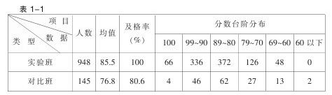

运用尝试教学法 落实素质教育 [1]
如何充分发挥小学数学教育的功能，落实素质教育，这是近年来广大小学数学教师共同关心、思考和探讨的热点问题。
实施素质教育，把素质教育的各项任务落到实处，就必须使教师队伍有与之相适应的教育观念和素质，必须有与之相适应的教学方法。实践证明，尝试教学法确实有利于素质教育的落实。
一、运用尝试教学法，利于培养学生的心理素质
学生心理素质的培养，主要是指习惯、兴趣、意志、情感的培养。尝试教学法的特点是：“先练后讲”“先学后教”，学生通过自己的努力去获取知识和掌握技能。学生通过自身的努力获取知识和掌握技能离不开对知识的渴望、浓厚的兴趣、执著的追求和专注的精神。显然，尝试教学法为培养学生的这些心理素质提供了客观的时间和空间。如小数的系统学习，由于小数和整数的联系十分密切；小数的计量单位间的进率和整数相同，小数的数位直接排在整数数位的右面；小数的大小比较与整数的大小比较类似；小数四则运算的法则与整数的计算法则基本一致，主要的不同是要处理小数点。教师只要掌握了教材的知识结构体系，明确所教内容在整个知识体系中的地位和作用、联系和区别，设计好基本训练题、准备题，学生就能在已有知识的基础上，用原有的知识结构去构建新的知识结构，达到尝试教学成功，使学生树起“我能学”的信心，不断萌发出继续学习的欲望。在尝试练习中有时部分学生会遇到这样或那样的困难，但因为有课本的示范作用和教师的指导，他们就会主动地自学课本和接受教师的讲解，使问题迎刃而解。从而培养了学生克服困难的精神。尝试教学的七步操作模式，每一个环节不但使全体学生在原有的基础上获取了新知识，培养了能力，发展了智力，还使学生的情感、意志、兴趣等非智力因素得到很好的发展。当他们把学习数学当做自身需要时，就越学越想学，越学越爱学，就会变“要我学”为“我要学”。
二、运用尝试教学法，利于培养学生的政治思想素质
素质教育具有开放性的特点，“尝试教学法以现代思维方式为特征，是小学数学课堂教育从封闭走向开放，从保守走向进取，从求同走向求异，从单向走向多向”。使学生从小就具有积极主动的参与意识和勇于探索、不断创新的精神。
尝试教学法变“先讲后练”为“先练后讲”，从根本上转变了学生被动接受知识的局面，大胆地放手让学生自己去尝试练习，这样就从小培养了学生“试一试”的探索精神，使学生敢于运用自身的能力去探索创新、解决问题。尝试教学法用尝试题引路，从疑问开始，“以疑引思”，利于学生思考，利于发展学生的智力，培养了学生独立思考的良好习惯。尝试练习、学生讨论又为学生表现自我、呈现思维过程创造了良好的氛围。学生各抒己见，相互影响、相互补充、相互激励，班内就会形成比、学、赶、帮、超的竞争机制，这样既能显示班级整体学习效应，又能增强学生的集体荣誉感。
三、运用尝试教学法，利于提高学生的文化素质
尝试教学以唯物辩证法为指导，把学生的主导作用和学生的主体作用有机地结合起来，充分发挥了学生“学”的内因和教师“教”的外因的作用，从而保证了教学效率的提高。从灵武县（今灵武市）1995年统计的毕业班数学成绩来看，就是明显的例证：

从卷面分析来看，实验班与对比班明显的差异主要在学习数学的能力上。实验班学生思维敏捷，观察能力，类推、迁移能力，抽象、概括能力以及分析问题、解决问题的能力强，尤其是在解答应用题方面与对比班差别明显，反映出实验班学生文化基础知识扎实、具有良好的思维品质。
义务教育的基本任务是提高整个民族素质。因此，必须面向全体学生，让每个学生达到教学的基本要求。运用尝试教学法后，实验班学生及格率达到百分之百，说明了学生在德智体几方面得到了全面发展，较好地完成了小学阶段数学教学的任务。
尝试教学法遵照中国教育改革和发展的总体目标，根据小学生的心理特点及认知规律，结合小学数学教材，正确处理了教师、学生、教材三者的关系，在教学过程中把传授知识、指导学习和开发学生的智力、培养学生的非智力因素紧密结合起来，最大限度地发挥了学生的主体作用和教师的主导作用，从而保证了素质教育各项任务的完成，为培养适应现代化建设所需要的各级各类合格人才打下了坚实的基础。因此，运用尝试教学法，是落实素质教育的有效途径。
附：学习尝试教学法的要点
学习尝试教学的要点
一、明确一个观点：学生能尝试，尝试能成功。
二、理解两个特征：先试后导、先练后讲。
三、培养三种精神：尝试精神、探索精神、创新精神。
四、促进四个有利：有利于大面积提高教学质量，提高全民族的素质；有利于培养学生的创新精神，促进智力发展；有利于提高课堂教学效率，减轻学生课外作业负担；有利于教师教育观念的转变，提高教师素质。
五、掌握五种操作摸式：一种基本式（七步教学程序）加四种变式（调换式、增添式、结合式、课外预习补充式）
六、运用六条教学原则：尝试指导原则、即时矫正原则、问题新颖原则、准备铺垫原则、合作互助原则、民主和谐原则。
七、重视七个达到尝试成功的因素：学生的主体作用、教师的主导作用、课本的示范作用、旧知识的迁移作用、学生之间的互补作用、师生之间的情意作用、教学手段的辅助作用。